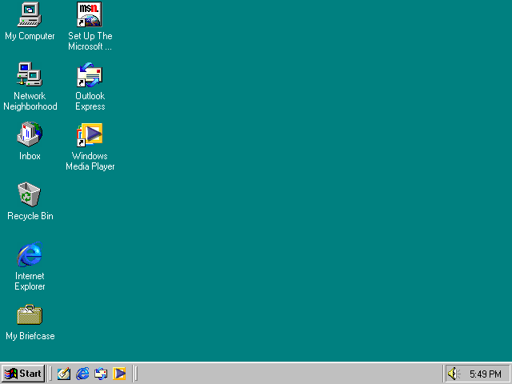

Windows 95
Wersja: Windows 95
Data premiery: 24 sierpnia 1995
Architektura: 16/32-bit
Windows 95 to rewolucja, która przyniosła nam menu Start, pasek zadań i wsparcie dla nazw plików dłuższych niż 8 znaków! 🚀 System, który z dumą był dostarczany na 13 dyskietkach – a potem wymagał godziny na instalację i modlitwy, by się nie zawiesił.

Data premiery: 24 sierpnia 1995
Architektura: 16/32-bit
Windows 95 to rewolucja, która przyniosła nam menu Start, pasek zadań i wsparcie dla nazw plików dłuższych niż 8 znaków! 🚀 System, który z dumą był dostarczany na 13 dyskietkach – a potem wymagał godziny na instalację i modlitwy, by się nie zawiesił.
🔧 Wymagania sprzętowe
- Procesor: 386DX lub lepszy
- Pamięć RAM: 4 MB (zalecane 8 MB)
- Dysk twardy: min. 55 MB
- Karta graficzna: VGA
- Napęd CD-ROM lub stacja dyskietek 3.5"
💽 Instrukcja instalacji
- Pobierz plik ISO klikając przycisk poniżej.
- Utwórz bootowalny dysk lub zamontuj ISO w maszynie wirtualnej.
- Podczas instalacji przygotuj sobie herbatę – to potrwa.
- Nie zapomnij o dodatkach takich jak Plus! i sterownikach dźwięku.